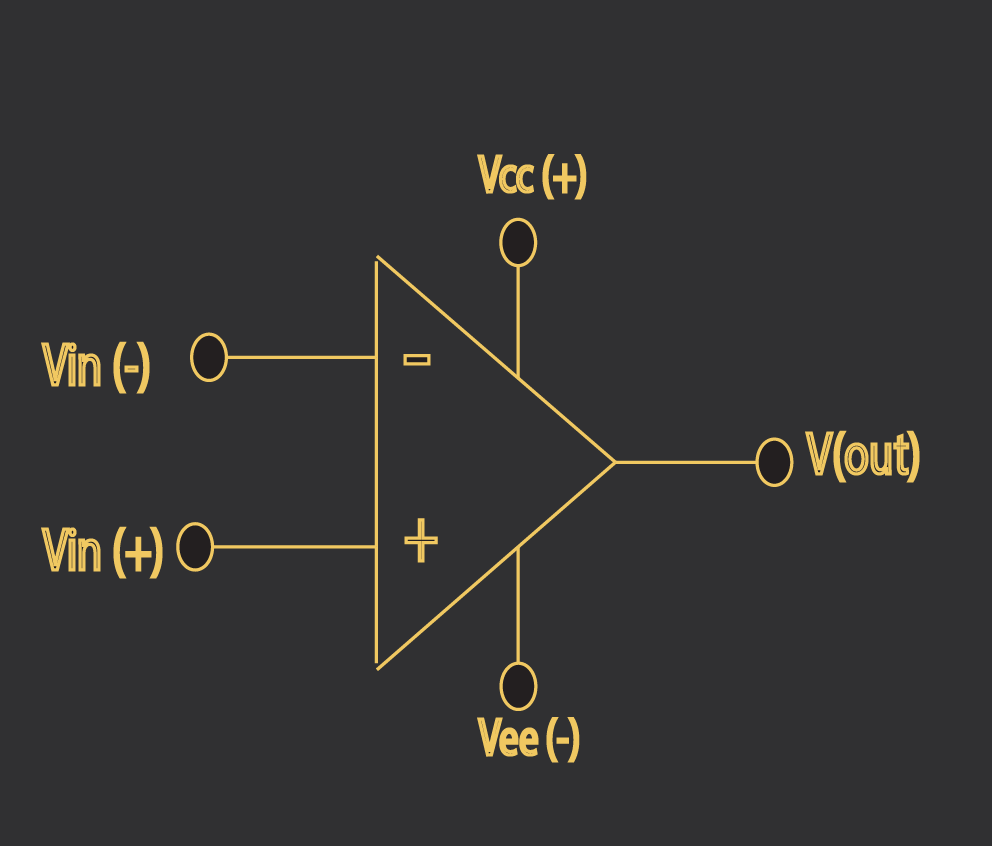

OPERATIONAL AMPLIFIER
-
A directly coupled high gain amplifier which can be used to amplify AC
as well as DC input
signals.
-
It is mainly used for mathematical operations like addition, subtraction,
multiplication,
integration etc and hence named as operational amplifier.

OPERATIONAL
AMPLIFIER:
- Here 2,3,7,6,4 are the pin number in IC 741.
- Vin (-) is inverting input.
- Vin (+) is non inverting input.
- Vcc+ and Vcc- is power supply.
- Vout is output of the operational amplifier.
Block Diagram Of Operational Amplifier
:

Working of Block Diagram of Op-amp:
- First the signal passes through (Input Stage), in that stage direct coupling happens, Due to
this the Gain of signal becomes High.
- This happens in [Intermediate stage]. Due to this the signal gets shifted from its place (Phase
Shift).
- Then the signal passes through Level Shifting stage where it corrects the phase shift of the
signal , and brings back it to its original place.
- Then the signal passes to the last stage i.e (Output stage) where it amplifies both negative as
well as positive signal and finally gives an output.